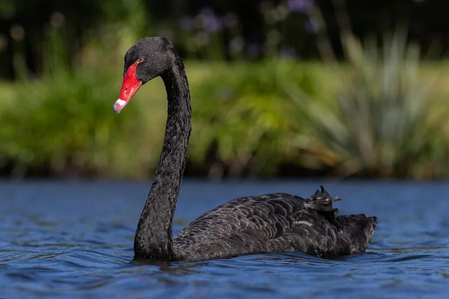

鸟类 · 动物界
黑天鹅 Cygnus atratus

澳大利亚特有的黑色天鹅，通体乌黑而飞羽白色，喙鲜红、尖端有白色横带，常成对在湖泊与河口游弋，已被引入多国。
- 分类
- 门脊索动物门纲鸟纲目雁形目科鸭科属天鹅属
- 栖息环境
- 澳大利亚与塔斯马尼亚的淡水湖泊、沼泽、河口及人工水域
- 地理分布
- 澳大利亚、塔斯马尼亚，并被引入新西兰、欧洲和北美等地
- 保护级别
- IUCN 无危（LC）
物种志
黑天鹅体长 110–140 cm，翼展约 160–200 cm，体重 3.7–9 kg，雄鸟明显大于雌鸟。全身羽毛乌黑，仅飞羽末端为白色，展开双翅时可见一道白边；喙鲜红色，尖端有一道白色横带，眼睛红色，腿灰黑色。幼鸟羽色灰褐，喙色较淡。
它们原产于澳大利亚及塔斯马尼亚的淡水湖泊、沼泽与河口，常在水草丰茂的浅水中活动，也会进入人工湖和公园。黑天鹅多成对生活，巢用芦苇和水草堆成，每窝产卵 4–8 枚，双亲轮流孵化约 35–40 天。雏鸟出壳后由亲鸟带领下水，约 5–6 个月长出飞羽。食物以水生植物为主，也吃藻类与少量水生动物。19 世纪起被引入新西兰、欧洲和北美，部分地区的种群已野化。
形态与习性
- 食性水生植物、藻类及少量水生动物
- 体长110–140 cm，翼展约 160–200 cm
- 体重3.7–9 kg，雄鸟更大
- 繁殖每窝 4–8 枚，双亲孵化约 35–40 天
- 寿命野外约 20 年
- 特征黑色羽衣，鲜红喙带白色横带
趣味知识
- 黑天鹅的飞羽末端是白色的，收拢时看不见，展翅时才露出一道白边。
- 它原产澳大利亚，19 世纪被引入新西兰和欧洲，如今在多地已野化。
- 黑天鹅是一夫一妻制，双亲共同孵卵、共同照料雏鸟。